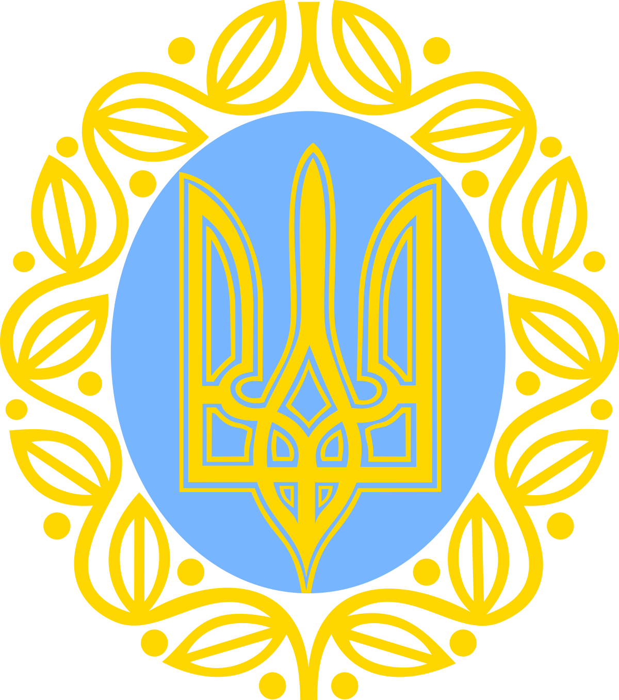

Докладніше: Українська революція, УНР, Українська держава, ЗУНР, та Українські держави (1917-1922)
 1917 року лютнева революція в Росії повалила монархію і дала початок республіканському Тимчасовому уряду[106]. Відлунням цих подій стало формування 17 березня у Києві Центральної Ради на чолі з професором Михайлом Грушевським[106]. 20 листопада, після більшовицького перевороту в Росії, Центральна Рада як представницький орган України проголосила створення автономної Української Народної Республіки (УНР)[107], а 22 січня 1918 року, через спалах українсько-більшовицької війни, проголосила її незалежність[108]. За місяць український уряд уклав у Брест-Литовську договір із Німецькою та Австро-Угорською імперіями, за допомоги яких звільнив Україну від більшовиків. Проте 29 квітня, внаслідок державного перевороту українських монархічних сил, уряд Центральної Ради замінив гетьман Павло Скоропадський[106][109]. Республіка була перейменована на «Українську Державу»[109].